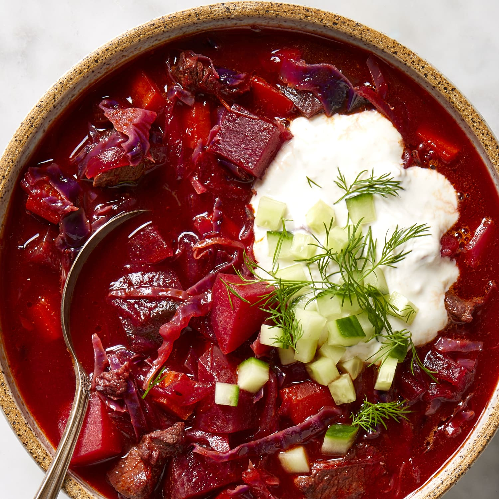

Borscht

Description
A Ukrainian borscht recipe. A rich meat based broth with beets, cabbage, potatoes
and carrots served with a dollop of sour cream.
Ingredients
For the Stock
- 3 liters cold water
- 1 1/2 lbs pork ribs or beef attached to bone
- 1/2 onion
- 1 carrot
- 2 celery sticks
- 2 bay leaves
- 5 peppercorns
- 1 tsp salt
For the Borscht
- 2 medium beets, peeled and grated
- 3 medium potatoes, peeled and cut into 2 inch chunks
- 2 medium carrots, grated
- 1 medium onion, chopped
- 2 cloves garlic, minced
- 1 bay leaf
- 1/2 small white cabbage, cored and sliced
- 1 tsp white vinegar
- salt to taste
- pepper to taste
Directions
For the Stock
- In a large stock pot combine water, pork ribs cut into smaller chunks
to fit the pot, quartered half onion, celery sticks and carrot cut in
half, bay leaves and peppercorns and a pinch of salt.
- Bring to a boil and then lower the heat to simmer for 1 hour to 1.5
hours until the meat is nearly falling off the bones. Remove the scum
that floats to the top with a slotted spoon several times through the
process.
- When the stock is done, let it cool slightly, then remove the ribs to
a separate plate and strain the stock by pouring it over a sieve.
Discard the vegetables.
- When the meat is cool enough to handle, take it off the bones and
shred with two forks or by hand. Set aside until needed. Discard the
bones. The stock could be made be in advance and frozen until needed.
For the Borscht
- Prepare all the vegetables by peeling and grating the beets and carrots
separately, chopping the onions, peeling and cutting the potatoes
and slicing the cabbage. Have all vegetables ready before starting
on the soup.
- Add the stock to the large soup pot, then add shredded meat, grated
beets, cut into medium chunks potatoes, tomato puree, a pinch of salt
and one bay leaf. Bring to a boil, then lower the heat and let it
simmer.
- Meanwhile heat 1 tablespoon of vegetable oil in a pan, then add the
grated carrots and chopped onions and saute over low heat for 7-10
minutes until caramelised, then add minced garlic and stir fry for 30
seconds.
- When the onions and carrots are done, add them to the soup pot
together with sliced cabbage and cook for 15 minutes or until the
cabbage leaves are tender but not mushy. Then add the juice of one
lemon or 1 tsp of white vinegar and salt and pepper to taste.
- Serve borscht with a dollop of sour cream or creme fraiche and
sprinkled with fresh dill or parsley.